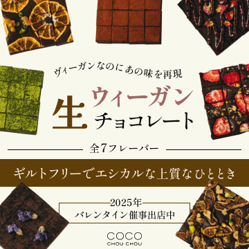
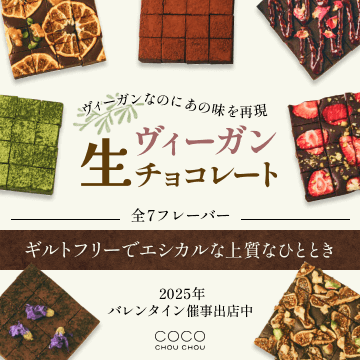
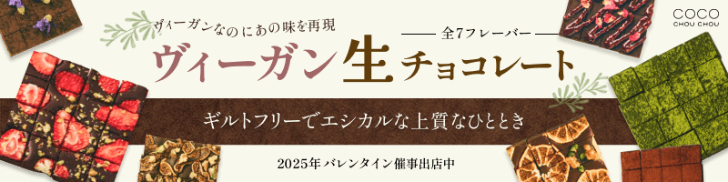

サイズ：800*200 , 360*360 / テイスト：エコロジー～美容～健康 ※テイスト共通
主張の強すぎないバックのカラーと植物のあしらいでヴィーガンのオーガニック感を重視したデザインを制作しました。
また、すべてのフレーバーを写真で見せつつ、具体的な味の名前を載せないことでバナーからの誘導を意識しました。
また、素材の写真が暗かったため、明るさとコントラスト、彩度を調整することで美味しく見えるように工夫しました。
明朝体を使用することで全体的に大人でおしゃれなデザインにしました。
初稿（360*360)

完成（360*360)

完成（800*200)
